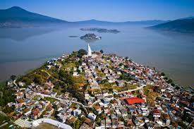

Explorando la Magia de México: Un Viaje por sus Zonas Turísticas y Pueblox Mágicos
México, tierra de contrastes y riqueza cultural, es un destino turístico incomparable que cautiva a viajeros de todo el mundo. Desde las impresionantes playas de arena blanca y aguas turquesa hasta las antiguas ruinas arqueológicas que cuentan historias de civilizaciones pasadas, México ofrece una experiencia única para aquellos que buscan aventura, historia y belleza natural.
En el corazón de este vasto país, se encuentran los encantadores Pueblox Mágicos, una colección de localidades pintorescas reconocidas por su singularidad, tradiciones arraogadas y belleza arquitectónica. Estos pueblox, ciudadosamente designados por el gobierno mexicano, ofrecen a los visitantes la oportunidad de sumergirse en la autenticidad de la cultura mexicana mientras exploran calles empedradas, plazas históricas y artesanías locales.
Uno de los destinos más emblemáticos de ´México es la Rivera Maya, ubicada en la costa del Caribe mexicano. Con sus impresionantes paisajes submarinos, que incluyen arrecifes de coral y cenotes de aguas cristalinas, la Riviera Maya es un paraíso para los amantes del buceo y el snorkel. Además esta región alberga sitios arqueológicos de renombre mundial, como Tulum y Cobá, que ofrecen una ventana a la antigua civilización maya.
En el oeste de México, se encuentra el pintoresco estado de Jalisco, hogar del incónico pueblo de Tequila, famoso por ser el lugar de origen de la bebida nacional de México. Aquí, los visitantes pueden recorrer las histporicas destilerías de tequila, explorar los campos de agave azul y aprender sobre el proceso de elaboración de esta emblemática bebida.
Otro destino imperdible es la mística ciudad de San Miguel de Allende, ubicada en el estado de Guanajuato. Este Pueblo Mágico, declarado Patrimonio de la Humanidad por la UNESCO, cautiva a los visitantes con su arquitectura colonial, calles empedradas y vibrante escena artística. Desde sus majestuosas iglesias hasta sus animados mercados de artesanías, San Miguel de Allende ofrece una experiencia cultural inigualable.
Desde las majestuosas ruinas de Chichén Itzá hasta las playas vírgenes de la costa del Pacífico, México es un destino que nunca deja de sorprender. Ya sea explorando las maravillas naturales de sus zonas turísticas o sumergiéndose en la autenticidad de sus Pueblox Mágicos, cada rincón de este país ofrece una aventura única y memorable para todos los que tienen la suerte de visitarlo
Lista de algunos de los Pueblos Mágicos más conocidos de México
El Valle de Bravo es un encantador pueblo mágico ubicado en el Estado de México, a aproximadamente 156 kilómetros al suroeste de la Ciudad de México. Este pintoresco destino es conocido por su belleza natural, su clima templado y su ambiente tranquilo, lo que lo convierte en un refugio popular tanto para los habitantes locales como para los turistas que buscan escapar del bullicio de la ciudad.
El Valle de Bravo se encuentra a orillas del hermoso lago artificial llamado Lago Avándaro, creado por la construcción de una presa en el río Bravo en la década de 1940. Este lago no solo brinda un escenario impresionante con sus aguas cristalinas rodeadas de exuberante vegetación, sino que también ofrece una amplia gama de actividades acuáticas, como esquí acuático, navegación, pesca y paseos en bote.
Además de su belleza natural, el Valle de Bravo cuenta con un centro histórico encantador, lleno de calles empedradas, casas coloniales y edificios con una arquitectura tradicional mexicana. Aquí encontrarás una variedad de tiendas de artesanías, galerías de arte, restaurantes gourmet y cafés acogedores donde puedes disfrutar de la gastronomía local y pasar un rato agradable.
Otro atractivo importante en el Valle de Bravo es el Parque Nacional Nevado de Toluca, que se encuentra en las cercanías y ofrece impresionantes paisajes montañosos, ideales para practicar senderismo, ciclismo de montaña y observación de aves.
En resumen, el Valle de Bravo es un destino único que combina la belleza natural con la rica cultura e historia de México, ofreciendo a sus visitantes una experiencia inolvidable en un entorno tranquilo y pintoresco.
Tulum
Tulum es una ciudad ubicada en la costa este de la península de Yucatán, en el estado de Quintana Roo, México. Es conocida por sus playas de arena blanca, aguas cristalinas del Caribe y su rica historia maya. Aquí tienes una descripción más detallada:
Playas paradisíacas: Tulum es famoso por sus impresionantes playas, que son consideradas entre las más hermosas de México. La arena blanca y suave se encuentra bordeada por aguas color turquesa, creando un paisaje de postal que atrae a visitantes de todo el mundo.
Sitios arqueológicos mayas: La ciudad está cerca de la antigua ciudad maya de Tulum, un importante sitio arqueológico que se encuentra en un acantilado frente al mar. Esta antigua ciudad amurallada es famosa por su espectacular ubicación frente al Caribe y sus impresionantes ruinas, incluyendo el Castillo y el Templo del Dios Descendente.
Ambiente bohemio y eco-chic: Tulum ha desarrollado una reputación como un destino de moda con un ambiente bohemio y eco-chic. Encontrarás una gran cantidad de hoteles boutique, restaurantes orgánicos y tiendas de moda que se mezclan con la naturaleza, utilizando materiales naturales y prácticas sostenibles.
Reservas naturales y cenotes: En los alrededores de Tulum, hay varias reservas naturales que ofrecen oportunidades para explorar la selva, observar aves y descubrir la vida silvestre local. Además, la región es famosa por sus cenotes, pozos de agua dulce naturales que son perfectos para nadar, hacer snorkel y bucear.
Vida nocturna y actividades: Aunque Tulum es conocido por su ambiente relajado durante el día, por la noche cobra vida con una vibrante escena nocturna. Desde fiestas en la playa hasta eventos culturales y música en vivo, hay muchas opciones para disfrutar después de que se pone el sol. Además, hay una variedad de actividades para disfrutar durante el día, como kayak, paddleboarding, yoga en la playa y más.
En resumen, Tulum es un destino fascinante que combina la belleza natural con la historia y la cultura, ofreciendo a los visitantes una experiencia única en el Caribe mexicano.
Tequila
Tequila es un pueblo mágico situado en el estado de Jalisco, México, y es conocido como el lugar de origen del famoso licor del mismo nombre. Aquí tienes una descripción detallada:
Cuna del tequila: Tequila es reconocido mundialmente por ser el lugar de origen del tequila, la bebida alcohólica icónica de México. En la región que rodea el pueblo, se cultivan los agaves azules, materia prima necesaria para la producción del tequila. Muchas de las destilerías más famosas del país se encuentran en los alrededores de Tequila, ofreciendo visitas guiadas donde se puede aprender sobre el proceso de elaboración de esta bebida emblemática.
Patrimonio cultural: Tequila es un lugar con una rica historia y patrimonio cultural. El pueblo en sí mismo conserva un encanto colonial con calles empedradas, coloridas casas tradicionales y una plaza central. Además, hay varias haciendas históricas que datan de los tiempos coloniales y que se han convertido en museos o centros culturales donde los visitantes pueden aprender sobre la historia y la cultura de la región.
Paisaje agavero: Los alrededores de Tequila ofrecen un impresionante paisaje agavero, que fue declarado Patrimonio de la Humanidad por la UNESCO en 2006. Kilómetros de colinas y valles están cubiertos de plantaciones de agave azul, creando un paisaje único y hermoso que es característico de esta región.
Gastronomía regional: Además del tequila, Tequila es conocido por su deliciosa gastronomía regional. Los visitantes pueden disfrutar de platillos tradicionales mexicanos, como las birrias, los tamales y los tacos, así como de especialidades locales que incorporan el tequila en su preparación, como el pollo al tequila o los camarones al tequila.
Artesanías y souvenirs: En el pueblo de Tequila y en sus alrededores, los visitantes encontrarán una gran variedad de tiendas y mercados donde se pueden comprar artesanías locales, como cerámica, textiles y objetos tallados en madera. Además, es posible adquirir una amplia gama de productos relacionados con el tequila, como botellas de diferentes marcas, vasos, camisetas y otros souvenirs.
En resumen, Tequila es un destino turístico único en México que combina historia, cultura, paisajes impresionantes y, por supuesto, la oportunidad de probar y aprender sobre el tequila, una de las bebidas más emblemáticas del país.
Videos acerca de los Pueblos Mágicos
Tabla de los Pueblos más visitados de México
San Miguel de Allende, Guanajuato
Con su arquitectura colonial, calles empedradas y una animada escena cultural, San Miguel de Allende es uno de los destinos más populares de México. Su centro histórico ha sido declarado Patrimonio de la Humanidad por la UNESCO.
Taxco, Guerrero
Conocido como el "Pueblo Mágico de la Plata", Taxco es famoso por su industria de la plata y sus hermosas iglesias coloniales. Sus calles adoquinadas y sus edificios blancos le dan un encanto único.
Pátzcuaro, Michoacán
Situado junto al lago de Pátzcuaro, este pueblo mágico es conocido por sus tradiciones culturales, su artesanía y su arquitectura colonial. Es especialmente popular durante la celebreación del Día de Muertos.

Valle de Bravo, Estado de México
Ubicado en las montañas cerca de la Ciudad de México, valle de Bravo es conocido por su hermoso lago, su clima agradable y su ambiente relajado. Es un destino popular para practicar deportes acuáticos y actividades al aire libre.
Tequila, Jalisco
Como mencionado anteriormente, Tequila es famoso por ser el lugar de origen del tequila. Además de las destilerías de tequila, el pueblo ofrece una arquitectura encantadora, paisajes agraveros impresionantes y una rica historia y cultura.
 En el corazón de este vasto país, se encuentran los encantadores Pueblox Mágicos, una colección de localidades pintorescas reconocidas por su singularidad, tradiciones arraogadas y belleza arquitectónica. Estos pueblox, ciudadosamente designados por el gobierno mexicano, ofrecen a los visitantes la oportunidad de sumergirse en la autenticidad de la cultura mexicana mientras exploran calles empedradas, plazas históricas y artesanías locales.
En el corazón de este vasto país, se encuentran los encantadores Pueblox Mágicos, una colección de localidades pintorescas reconocidas por su singularidad, tradiciones arraogadas y belleza arquitectónica. Estos pueblox, ciudadosamente designados por el gobierno mexicano, ofrecen a los visitantes la oportunidad de sumergirse en la autenticidad de la cultura mexicana mientras exploran calles empedradas, plazas históricas y artesanías locales.